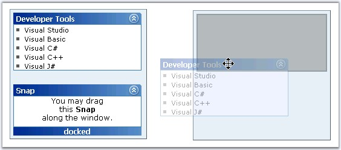

Styles can be chosen from the provided options for the dragging and docking actions. Set the respective properties to the required option to apply the styles for drag and dock actions.
|
Property |
Description |
|
DockingStyle |
Specifies the styles to be used for Snap dock. The options included are as follows: · None · Original · SolidOutline · DashedOutline · TransparentRectangle · GhostCopy |
|
DraggingStyle |
Specifies the dragging style. The options included are as follows: · Original · GhostCopy · SolidOutline · DashedOutline · TransparentRectangle · None |

Figure 378: Drag style set to GhostCopy, Dock style to TransparentRectangle and DragMode to FreeStyle
DraggingMode specifies the styles as to how the drag actions must be performed.
|
Property |
Description |
|
DraggingMode |
Specifies the style to be used on Snap drag. The options included are as follows: · None · FreeStyle · Horizontal · Vertical |
The html view of the dragging and docking styles and the dragging mode properties settings and the code snippets are given below.
|
[aspx]
<cc1:Snap ID="Snap1" runat="server" DraggingMode="FreeStyle" DraggingStyle="GhostCopy" DockingStyle=TransparentRectangle><cc1:Snap> |
|
[C#]
this.Snap1.DraggingStyle = SnapDraggingStyleType.GhostCopy; this.Snap1.DockingStyle = SnapDockingStyleType.TransparentRectangle; this.Snap1.DraggingMode = SnapDraggingType.FreeStyle; |
|
[VB]
Private Me.Snap1.DraggingStyle = SnapDraggingStyleType.GhostCopy Private Me.Snap1.DockingStyle = SnapDockingStyleType.TransparentRectangle Private Me.Snap1.DraggingMode = SnapDraggingType.FreeStyle |
See Also
Docking Containers and Snap Dock settings